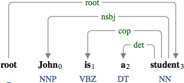
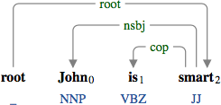
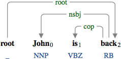
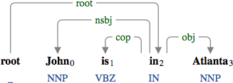
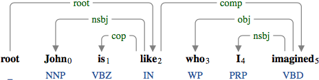
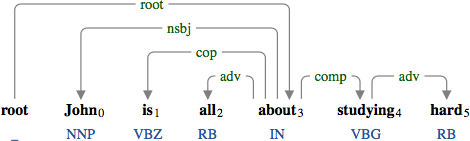
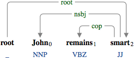
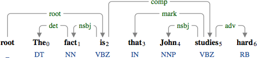
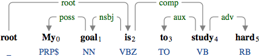

cop : copula
A copula (cop) verbalizes a non-verbal predicate.

The copula "is" verbalizing the nominal predicate "student".
The copula "is" verbalizing the nominal predicate "student".

The copula "is" verbalizing the adjectival predicate "smart".
The copula "is" verbalizing the adjectival predicate "smart".

The copula "is" verbalizing the adverbial predicate "back".
The copula "is" verbalizing the adverbial predicate "back".

The copula "is" verbalizing the prepositional predicate "in".
The copula "is" verbalizing the prepositional predicate "in".

The copula "is" verbalizing the prepositional predicate "like".
The copula "is" verbalizing the prepositional predicate "like".

The copula "is" verbalizing the prepositional predicate "about".
The copula "is" verbalizing the prepositional predicate "about".
The copula does not need to be a "be" verb.

The copula "becomes" verbalizing the nominal predicate "student".

The copula "remains" verbalizing the adjectival predicate "smart".
The copula "remains" verbalizing the adjectival predicate "smart".
We do not allow a clause to be verbalized by the copula. This analysis is chosen to prevent the clausal complement from having multiple subjects.

The copula "is" the head of the clausal complement "that John studies hard". If the predicate "studies" in the declarative clause became the head of the copula "is", both "the fact" and "John" would become the subjects of "studies".
The copula "is" the head of the clausal complement "that John studies hard". If the predicate "studies" in the declarative clause became the head of the copula "is", both "the fact" and "John" would become the subjects of "studies".

The copula "is" the head of the open clausal complement "to study hard". If the predicate "study" in the infinitive clause became the head of the copula "is", "my goal" would become the subject of "study", which is not correct.
The copula "is" the head of the open clausal complement "to study hard". If the predicate "study" in the infinitive clause became the head of the copula "is", "my goal" would become the subject of "study", which is not correct.